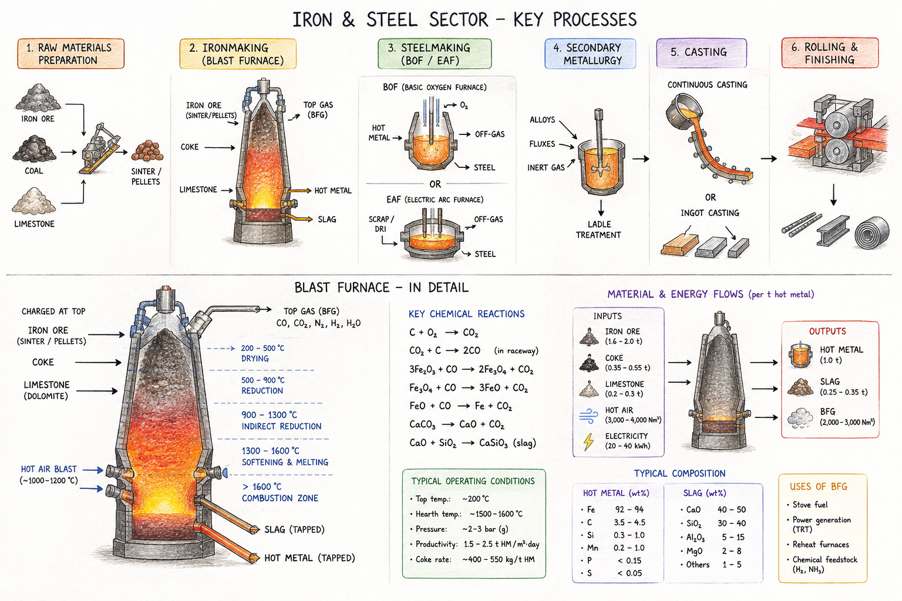
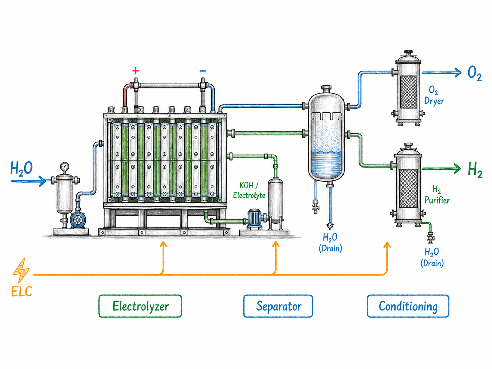
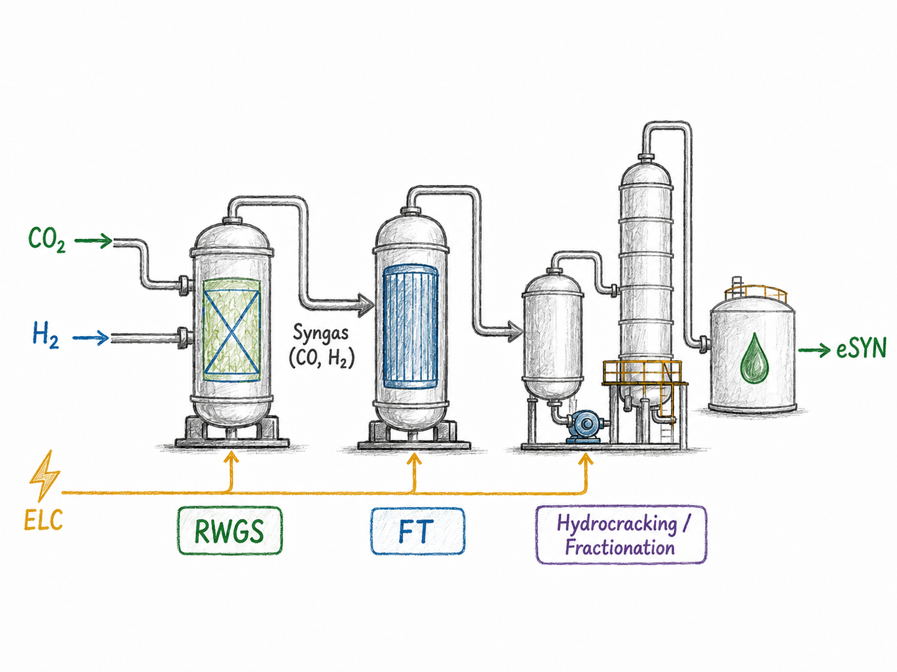
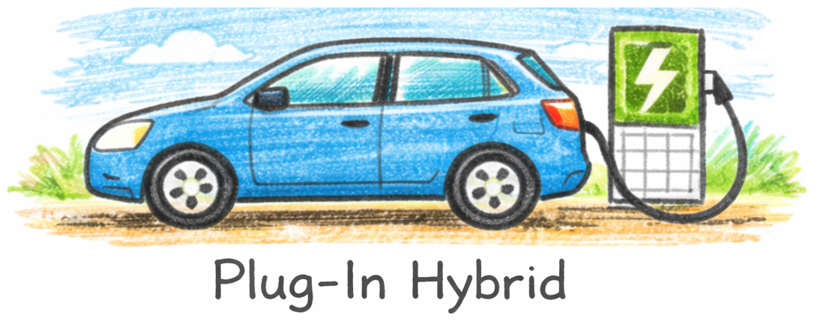

source("R/workshop-model.R")6 Special cases of processes
So far every technology took one fuel and made one product. Real conversion processes are messier: they consume several inputs, emit or co-produce several outputs, and often serve a service demand (tonnes of steel, vehicle-kilometres) rather than an energy commodity. Three recurring patterns cover most of it.
Two ideas do the heavy lifting throughout:
- The conversion chain. Inside a technology,
input → use → activity → output, governed by three coefficient sets inceff:cinp2use(fuel → common energy basis),use2cact(→ the central activity variable that all costs and capacity attach to), andcact2cout(activity → each output). All default to 1; unit conversions live here. - Auxiliary flows (
aux+aeff). Anything that rides alongside the main conversion — an emission produced, a by-product recovered, water consumed — is an aux flow, linked by a coefficient named<driver>2a<out|inp>(e.g.act2ainp= consumed per unit activity,cout2aout= produced per unit output).
Technology specifications. The processes below are stored as YAML techspec files under tech_specs/. Read one with read_techspec(), check it with tech_spec_issues(), and build the newTechnology() object with tech_from_spec() — the same round-trip the interactive process-designer GUI uses.
A recurring trap: a service demand needs its own commodity before a newDemand() can reference it, and its unit/timeframe must match. Model the service (hydrogen, steel, vehicle-km) as a newCommodity, have the process produce it, and pull it with a demand.
6.1 Electrolyser — electricity → hydrogen
The flexible load of Section 5.4, built properly: a PEM electrolyser that consumes electricity, produces hydrogen, and recovers heat as a co-product. The spec is tech_specs/PEM100.yml (a DEA-catalogue 100 MW unit, in GWh), with efficiency that improves by vintage (see Section 4.4).
ELY <- tech_from_spec("tech_specs/PEM100.yml")
draw(ELY) # electricity in; hydrogen and heat outLearning goal: a single-input, multi-output conversion (H₂ + heat) with vintaged efficiency; adding water as a consumed aux (act2ainp) is a one-line extension. Reuse it as the time-flexible load whose siting follows the renewables.
Exercises (to finish): 4.1 draw() the electrolyser and read its vintaged cact2cout for H₂; 4.2 screen its LCOE with levcost() at a few electricity prices; 4.3 drop it into the Section 5.4 model as the flexible load and confirm it sites with the renewables.
6.2 Blast furnace — iron & steel
A genuinely multi-input, multi-output process: iron ore, coke, and fluxes in; pig iron out, with blast-furnace gas and slag as co-products and process CO2 from the coke.

Learning goal: several inputs, some in an input group with shares (ore + scrap), combustion on the reductant to book process CO2, and co-products as aux (cout2aout); the chain closes on a STEEL service demand.
IRON <- newCommodity("IRON", unit = "Mt", timeframe = "ANNUAL")
BF <- newTechnology(
name = "BF",
desc = "Blast furnace",
input = list(
comm = c("IRON_ORE", "COKE", "SCRAP"),
group = c("i", NA, "i"), # ore + scrap interchangeable
unit = c("Mt", "PJ", "Mt"),
combustion = c(0, 1, 0) # coke burns -> CO2
),
output = list(comm = "IRON", unit = "Mt"),
aux = list(acomm = c("BF_GAS", "SLAG"), unit = c("PJ", "Mt")),
aeff = data.frame(
comm = c("IRON", "IRON"),
acomm = c("BF_GAS", "SLAG"),
cout2aout = c(3.25, 0.20) # co-product yields per unit iron
),
ceff = data.frame(
comm = c("IRON_ORE", "COKE", "SCRAP"),
cinp2use = c(NA, 9.30, NA),
cinp2ginp = c(1.2, NA, 0.155)
),
olife = 20L
)
draw(BF) # ore + coke in; iron, blast-furnace gas and slag outExercises (to finish): 4.4 draw() the furnace and trace ore/coke in, iron/gas/slag out; 4.5 add a scrap-fed electric-arc route (EAF, electricity as aux via cout2ainp) and compare their CO2 per tonne — a preview of decarbonising heavy industry.
6.3 Light-duty vehicles — fuel → mobility
A process whose output is a service: passenger-kilometres, not energy. Three real specs ship in tech_specs/ (converted to GWh): a battery-electric, a diesel, and a gasoline-hybrid car fleet, each producing highway and city passenger-km (PLDVHWY / PLDVCTY) from its fuel.
LDV_BEV <- tech_from_spec("tech_specs/LDV_BEV.yml")
LDV_DSL <- tech_from_spec("tech_specs/LDV_DSL.yml")
LDV_HYB <- tech_from_spec("tech_specs/LDV_HYB.yml")
draw(LDV_BEV) # electricity in; highway + city passenger-km outLearning goal: a service-demand commodity in MPKm, the fuel-economy conversion carried on use2cact/cap2act so energy, activity and capacity agree, and a highway/city output split by share.
Exercises (to finish): 4.6 build the three fleets, draw() each, and check the energy identity vTechInp * cinp2use == vTechOut / (use2cact * cact2cout); 4.7 give them a shared PLDVHWY/PLDVCTY demand and let the model choose the fleet mix under a fuel price and, later, a carbon price.
6.4 Build your own
Three processes, three diagrams, no code — your turn to turn each picture into a technology. Build it by hand (newTechnology(), or a YAML techspec like those in tech_specs/) or, more easily, with the interactive process designer, which lets you wire ports and blocks visually and exports a validated techspec:
process_designer() # launch the Shiny techspec editorThe process designer’s online / AI-assisted features (auto-drafting a spec from a description or a diagram) need API keys that are not set up for the course yet — we will cover those next session. The manual ports-and-blocks editor, and everything in these exercises, works without them.
4.8 — An alkaline electrolyser. Build the alkaline counterpart to the PEM electrolyser of Section 6.1 from the diagram below: electricity in, hydrogen out, with its own efficiency, capital cost and (optionally) a water input. Give it vintages so its efficiency improves over time, then compare its levcost() with FPEM100’s.

4.9 — Power-to-liquid e-synfuel (RWGS + Fischer–Tropsch). A multi-step power-to-liquid route: hydrogen and captured CO2 are combined — reverse water-gas shift to syngas, then Fischer–Tropsch synthesis — into a synthetic liquid fuel, with heat and tail gas as co-products. Build it as one technology with several inputs and several outputs: H2 and CO2 in, the e-fuel out, heat/tail-gas as aux (cout2aout). It is the natural downstream of the electrolyser — the hydrogen it consumes is what Section 6.1 produces.

4.10 — A plug-in hybrid vehicle (PHEV). A dual-fuel vehicle that draws both electricity and gasoline. Starting from the LDV_BEV and LDV_HYB specs in tech_specs/, build a PHEV that consumes the two fuels as an input group with a share split, still producing PLDVHWY/PLDVCTY passenger-km, and add it to the fleet-mix comparison of exercise 4.7.

6.5 Where this connects
- The electrolyser is the flexible load of Section 5.4 — the same object, now with its real conversion and vintaged efficiency.
- Groups + shares (blast-furnace fuels, vehicle highway/city split) are the structural step beyond chapters 1–3 — and, since the grouped input/output balance now solves on GLPK, the blast furnace can be run, not just drawn, once its parameters are in.
- Everything here is pure LP and solves on GLPK once the specs are validated and wired to demands — none of it needs another backend.
To be completed with worked, solvable solutions before the session — the process-designer GUI builds and edits these specs interactively.